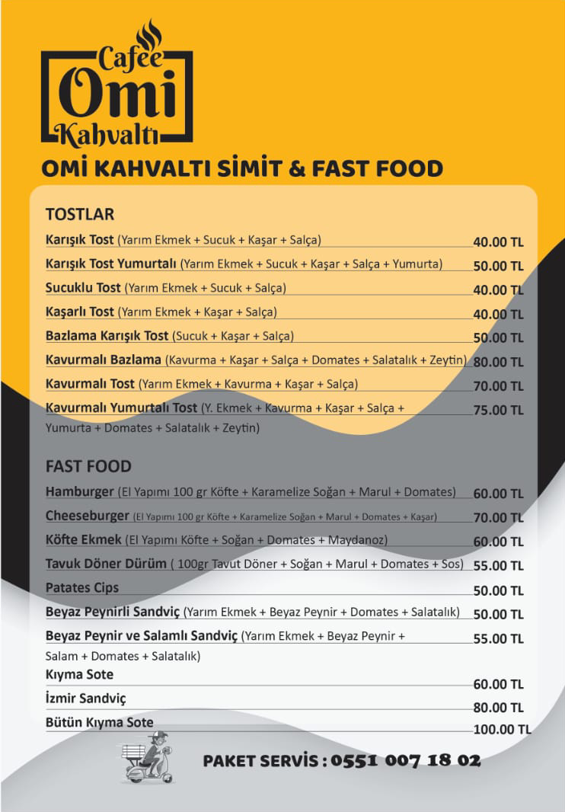

?
×
YARDIM / HELP / ДОПОМОГА / ПОМОЩЬ / HILFE
🇹🇷 Menüleri sağa veya sola kaydırarak ya da oklara tıklayarak sayfalar arası geçiş yapabilirsin.
🇬🇧 You can change pages of the menu by dragging to the right or left, or clicking on the arrows.
🇺🇦 Ви можете перемикатися між сторінками, проводячи меню ліворуч або праворуч або натискаючи стрілки.
🇷🇺 Вы можете переключаться между страницами, проводя меню влево или вправо или нажимая стрелки.
🇩🇪 Sie können zwischen den Seiten wechseln, indem Sie in den Menüs nach links oder rechts wischen oder auf die Pfeile klicken.
